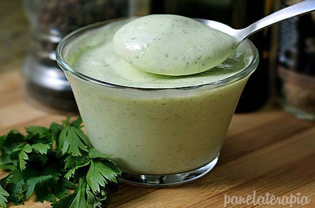
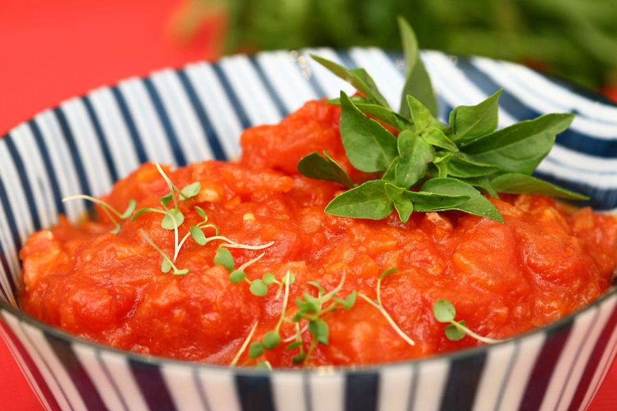
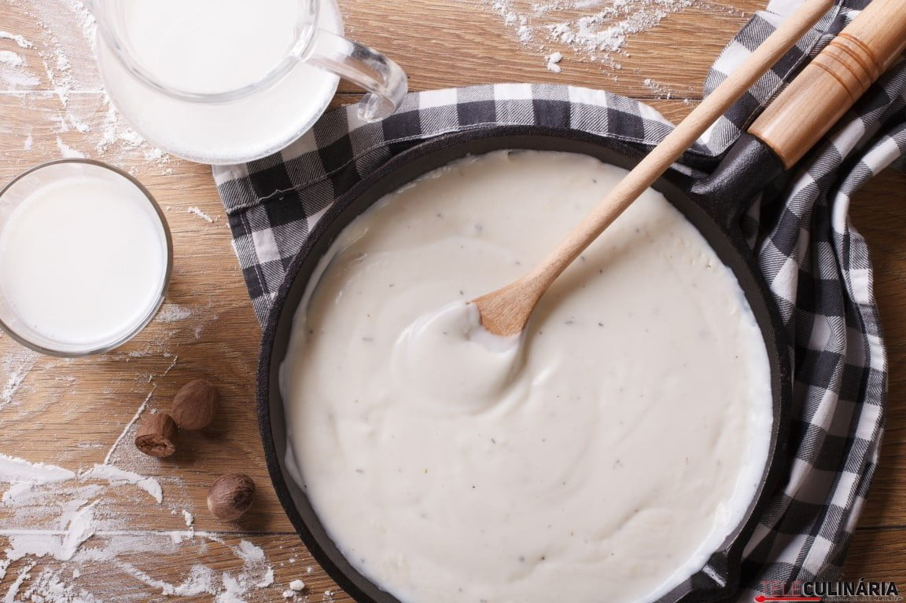
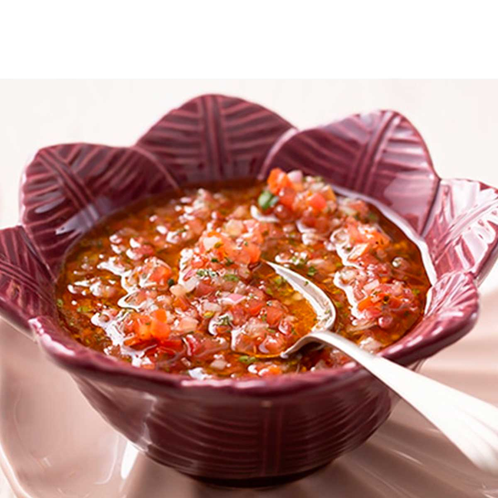
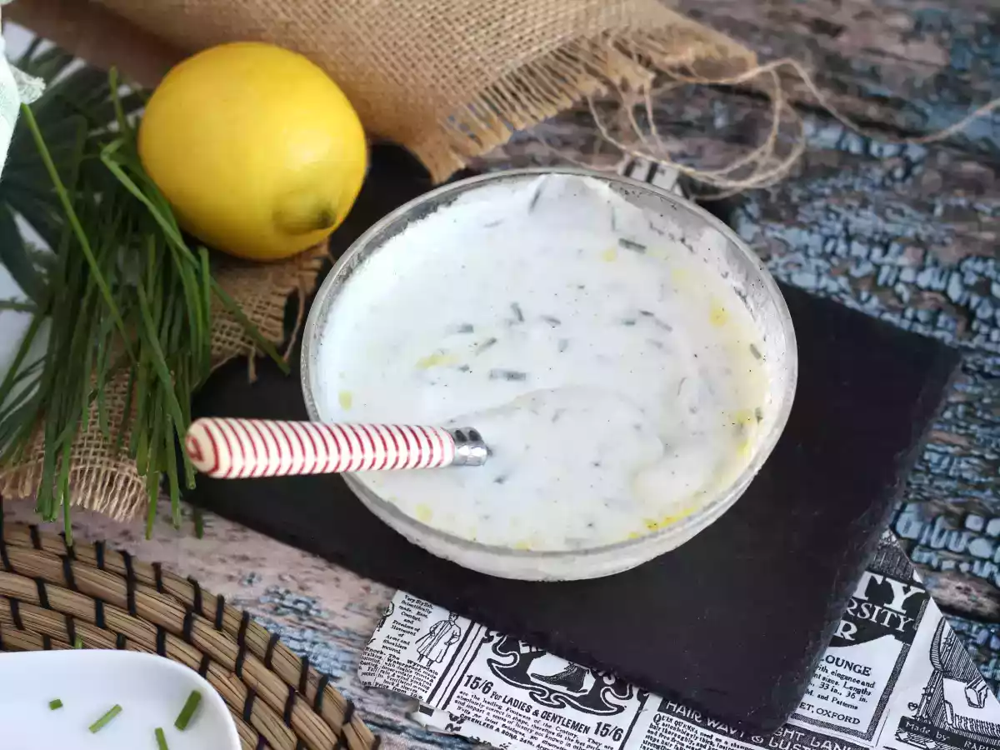
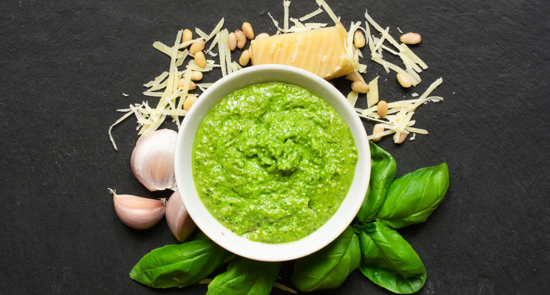
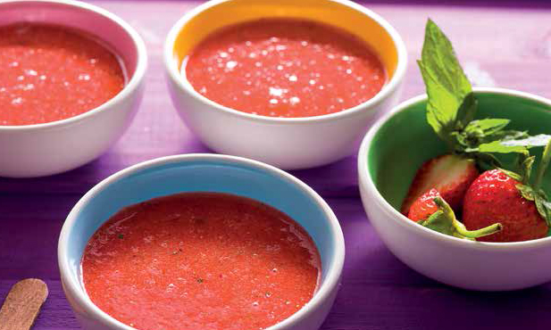

🍴
Molhos & Temperos
Receitas Gourmet para Elevar seus Pratos
✦ Molhos Salgados ✦
✦ Caldos Concentrados ✦
✦ Molhos Doces ✦
COLEÇÃO CHEF MARISA
🥄
Molhos Salgados
Descubra sabores intensos e versáteis para acompanhar carnes, massas, saladas e muito mais.
3
Molho para Bolonhesa

Ingredientes
- 500g de carne moída
- 1 cebola média picada
- 2 dentes de alho picados
- 400g de tomate pelado
- 2 colheres de sopa de azeite
- Sal e pimenta a gosto
- Ervas frescas (manjericão ou orégano) a gosto
Modo de Preparo
Aqueça o azeite em uma panela e refogue a cebola e o alho até dourarem.
Adicione a carne moída e cozinhe até perder a cor crua.
Acrescente os tomates pelados, tempere com sal, pimenta e deixe cozinhar em fogo baixo por 30 minutos.
Finalize com as ervas frescas e sirva com massa ou arroz.
Dicas do Chef
Se quiser um molho mais encorpado, deixe cozinhar por mais tempo e adicione uma colher de extrato de tomate.
5
Guacamole

Ingredientes
- 2 abacates maduros
- 1 tomate picado
- 1/2 cebola roxa picada
- Suco de 1 limão
- Coentro a gosto
- Sal e pimenta a gosto
Modo de Preparo
Amasse os abacates até formar um creme.
Adicione o tomate, cebola, coentro e o suco de limão.
Tempere com sal e pimenta, misture bem e sirva imediatamente.
Dicas do Chef
Para evitar que escureça, mantenha a pedra do abacate dentro do guacamole até a hora de servir.
6
Maionese

Ingredientes
- 1 ovo inteiro
- 1 colher de chá de mostarda
- 200 ml de óleo vegetal
- Suco de 1/2 limão
- Sal a gosto
Modo de Preparo
Bata o ovo com a mostarda e o sal.
Adicione o óleo lentamente, em fio, batendo constantemente até engrossar.
Finalize com o suco de limão e ajuste o sal.
Dicas do Chef
Use óleo neutro e ovos em temperatura ambiente para evitar que a maionese talhe.
7
Molho frio de tomate com manjericão

Ingredientes
- 4 tomates maduros
- 1 dente de alho
- Folhas de manjericão a gosto
- 2 colheres de sopa de azeite
- Sal e pimenta a gosto
Modo de Preparo
Bata todos os ingredientes no liquidificador até obter um molho homogêneo.
Refrigere por pelo menos 30 minutos antes de servir.
Dicas do Chef
Sirva com massas frias ou como molho de saladas.
8
Molho Béchemel

Ingredientes
- 50g de manteiga
- 50g de farinha de trigo
- 500ml de leite
- Sal, pimenta e noz-moscada a gosto
Modo de Preparo
Derreta a manteiga em uma panela e adicione a farinha, mexendo até formar um roux.
Acrescente o leite aos poucos, mexendo constantemente até engrossar.
Tempere com sal, pimenta e noz-moscada.
Dicas do Chef
Para um molho mais cremoso, use leite morno.
9
Vinagrete de Frutos Vermelhos com Hortelã

Ingredientes
- 100g de morangos
- 50g de framboesas
- 1 colher de sopa de vinagre balsâmico
- 2 colheres de sopa de azeite
- Folhas de hortelã a gosto
- Sal e pimenta a gosto
Modo de Preparo
Amasse levemente os frutos vermelhos.
Adicione vinagre, azeite, sal e pimenta e misture bem.
Finalize com folhas de hortelã e sirva frio.
Dicas do Chef
Ideal para saladas verdes ou pratos com queijos leves.
10
Molho Fresco de Iogurte com Queijo e Aneto

Ingredientes
- 200g de iogurte natural
- 50g de queijo fresco esfarelado
- 1 colher de sopa de aneto fresco picado
- Sal e pimenta a gosto
Modo de Preparo
Misture todos os ingredientes até ficar homogêneo.
Sirva gelado sobre saladas ou peixes grelhados.
Dicas do Chef
Use iogurte natural cremoso para melhor textura.
11
Molho Béarnaise

Ingredientes
- 3 gemas de ovo
- 100g de manteiga derretida
- 2 colheres de sopa de vinagre de vinho branco
- 2 colheres de sopa de estragão fresco picado
- Sal e pimenta a gosto
Modo de Preparo
Bata as gemas em banho-maria e adicione a manteiga derretida aos poucos.
Acrescente o vinagre, estragão, sal e pimenta.
Sirva quente sobre carnes grelhadas.
Dicas do Chef
Não aqueça demais para evitar que o molho talhe.
12
Molho Holandês

Ingredientes
- 3 gemas de ovo
- 100g de manteiga clarificada
- 1 colher de sopa de suco de limão
- Sal e pimenta a gosto
Modo de Preparo
Bata as gemas em banho-maria, adicione a manteiga clarificada aos poucos.
Acrescente o suco de limão e tempere com sal e pimenta.
Sirva com ovos benedict ou peixes grelhados.
Dicas do Chef
Use manteiga clarificada para evitar que o molho se separe.
13
Molho Pesto com Noz

Ingredientes
- 50g de folhas de manjericão
- 30g de nozes
- 50g de queijo parmesão ralado
- 100ml de azeite
- 1 dente de alho
- Sal a gosto
Modo de Preparo
Bata todos os ingredientes no processador até formar uma pasta homogênea.
Ajuste o sal e sirva com massas ou torradas.
Dicas do Chef
Para um sabor mais intenso, torre levemente as nozes antes de triturar.
14
Caldo Concentrado de Vaca
Ingredientes
- 500g de ossos de vaca
- 2 cenouras picadas
- 1 cebola picada
- 2 talos de aipo
- Sal a gosto
- 1,5 L de água
Modo de Preparo
Cozinhe os ossos em água fervente, adicione legumes e deixe ferver por 3 horas.
Coe e conserve o caldo concentrado na geladeira ou freezer.
Dicas do Chef
Use ossos com tutano para um caldo mais saboroso.
15
Caldo Concentrado de Legumes
Ingredientes
- 2 cenouras picadas
- 1 cebola picada
- 2 talos de aipo
- 1 alho-poró
- 1,5 L de água
- Sal a gosto
Modo de Preparo
Cozinhe todos os legumes em água fervente por 1 hora.
Coe e conserve o caldo concentrado na geladeira ou freezer.
Dicas do Chef
Adicione ervas frescas para um sabor mais intenso.
16
Caldo Concentrado de Frango

Ingredientes
- 1 frango inteiro ou 500g de ossos de frango
- 2 cenouras picadas
- 1 cebola picada
- 2 talos de aipo
- Sal a gosto
- 1,5 L de água
Modo de Preparo
Cozinhe o frango ou ossos em água fervente.
Adicione legumes, cozinhe em fogo baixo por 2 a 3 horas.
Coe e conserve o caldo concentrado na geladeira ou freezer.
Dicas do Chef
Retire a gordura superficial antes de armazenar para um caldo mais leve.
17
Molho de Morango com Limão e Hortelã

Ingredientes
- 300g de morangos frescos
- 2 colheres de sopa de açúcar
- Suco de 1 limão
- Folhas de hortelã a gosto
Modo de Preparo
Higienize e corte os morangos.
Misture com açúcar, suco de limão e hortelã picada.
Sirva como cobertura de sobremesas ou sorvetes.
Dicas do Chef
Deixe descansar 30 minutos para intensificar o sabor.
18
Ganache de Chocolate

Ingredientes
- 200g de chocolate meio amargo
- 200ml de creme de leite fresco
Modo de Preparo
Aqueça o creme de leite até quase ferver.
Despeje sobre o chocolate picado e misture até homogeneizar.
Deixe esfriar e use para coberturas ou recheios.
Dicas do Chef
Para ganache mais firme, use chocolate com maior teor de cacau.
19